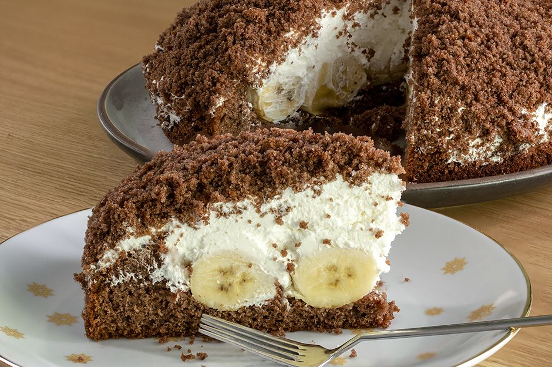

⋆ Köstebek pasta yapımı ⋆

Malzemeler 👩🏼🍳
- 3 adet yumurta
- 1 su bardağı toz şeker
- 1/2 çay bardağı süt
- 1/2 çay bardağı sıvı yağ
- 2 tepeleme yemek kaşığı kakao
- 1 paket kabartma tozu
- 1 paket vanilya
- 1,5 su bardağı un
İç kreması için
- 2 paket krem şanti
- 1,5 su bardağı soğuk süt
- 2 adet muz
Yapılışı 🍽
- İç dolgusu için krem şantiyi hazırlayın. 1,5 su bardağı soğuk süt ile 2 paket krem şantiyi bir mikser yardımıyla iyice çırpın. Hazırladığınız krem şantiyi soğuması için dolaba kaldırın.
- Kek için; yumurta ve şekeri mikser yardımıyla 5 dakika boyunca çırpın. Ardından gerekli olan diğer malzemeleri ekleyin ve güzelce karıştırın. Kek hamurunuz hazır.
- Dikdörtgen bir fırın tepsisinin dibine yağlı kağıt serin ve üstüne hazırladığınız kek karışımını dökün. Önceden ısıtılmış 180 derece fırında yaklaşık 20 dakika pişirin.
- Kek piştikten sonra fırından alın ve ılıklaşmasını bekleyin. Yuvarlak bir kesme kalıbıyla kekinizi yuvarlak yuvarlak kesin.
- Kalan kek parçalarını iyice soğumaları için bir kenara alın.
- Krem şantiyi bir sıkma torbasına alın ve yuvarlak kestiğiniz her bir kek parçasının üstüne bir miktar sıkın.
- Muzları yuvarlak yuvarlak dilimleyin ve üstlerine yerleştirin.
- Muzların üstüne tekrar bir tepe oluşturacak şekilde krem şantiyi sıkın.
- Kalan ve iyice soğumuş olan kek parçalarını mutfak robotunda un haline gelene dek çekin.
- Üstüne krem şanti sıktığınız kekleri bu un haline getirdiğiniz kek kırıntıları ile kaplayın ve soğuması için tekrar buzdolabına kaldırın.
- Bu şekilde yaklaşık 30 dakika dolapta beklettikten sonra servis edin.